前阵子，为进一步促进中外人员往来，中方决定扩大免签国家范围：对澳大利亚持有普通护照人员试行免签政策！
也就是说，从今年的7月1日开始一直到2025年12月31日期间，持有澳大利亚普通护照人员来华经商、观光旅游、探亲访友和过境不超过15天，可免签入境。
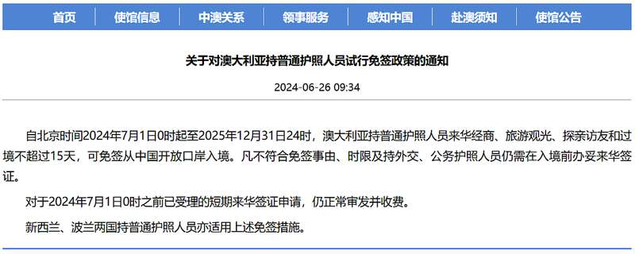
许多华人纷纷表示，终于可以回家看看了！
不过，只待15天怎么够？最近，一位妈妈就分享了顺利拿到延期签证的流程！
（截图来源小红书@Fion）
虽然她只申请延长了一个月，
但其实最长可以延长半年！
有需要的妈妈赶紧收藏，以备不时之需~
不止15天！
华人妈妈干货分享：
只需简单几步，顺利拿到一个月延期签证…
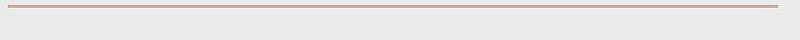
据这位妈妈描述，想要在回国后顺利拿到延期签证，只需按照以下流程走一波：
回国后，
先去辖区派出所办理暂住证，
然后去出入境管理局办理延期。
需要注意的是，一定要带护照原件，护照照片纸质版和电子版，如果是给孩子办理，需要携带出生证明原件，还提供返程机票信息。
按照这个流程，7天下签！这位博主将自己的经验分享出来，也是希望能帮助到有需要的妈妈。
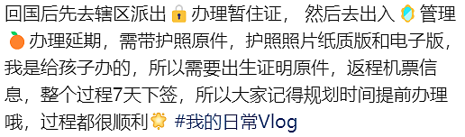
（截图来源小红书@Fion）
这条帖子一出，立即引起了华人妈妈的注意，留言区很快就成为了妈妈们的“大型解惑现场”。
帮主就整理了其中一些大家比较关心的问题，妈妈们一起来看看吧~
首先，办理延期是拿着15天免签入境之后，在国内辖区派出所办理延期。
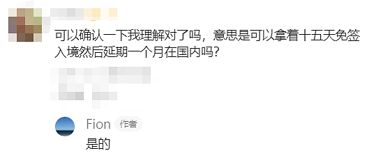
其次是时间的选择，一定要选在15天到期前去办理，最好是提前7天以上。
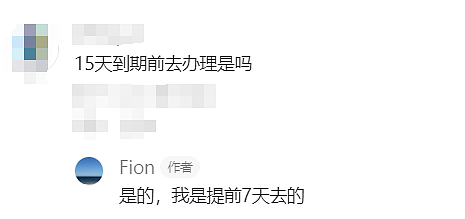
关于延期原因，这位妈妈表示，“他们不管什么原因，都给延期。”
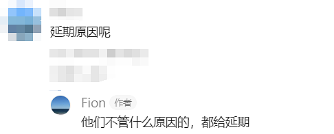
关于延期的费用，只需要160元，是人民币！
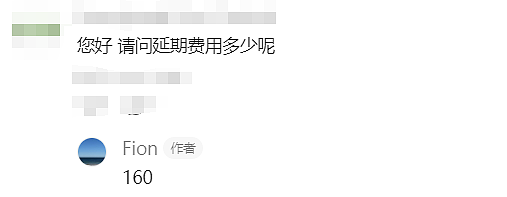
关于延期最长可以延多久，这位妈妈表示，自己延长了一个月，但当时办理业务的时候，工作人员表示“可以延半年”。
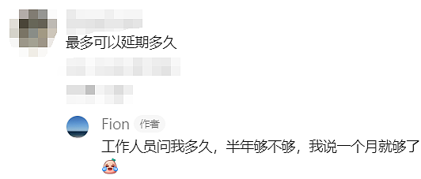
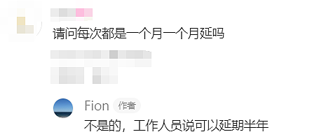
对于那些孩子出生在澳洲，但是需要回国的妈妈来说，要把孩子在澳洲的出生证明带上。
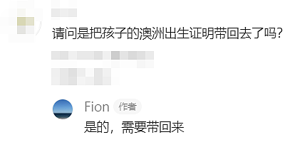
还有就是，给孩子办理延期的时候最好带上娃，万一照片不符合要求，在现场临时照也比较方便。
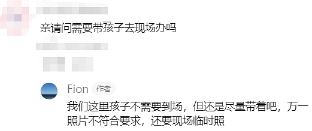
如果你一早就打算要延期，那么可以提前购买正确的返程机票，不用来回改签（又省一笔），入境的时候直接说会办延期即可。
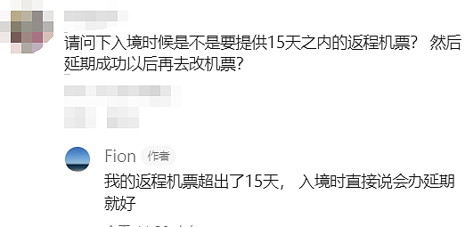
有华人了解到整个流程之后，不禁感叹，“才160RMB，这比在澳洲办国内签证便宜多了！”
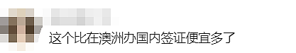
还有网友调侃说，“这样的话，悉尼的签证处都要关门了…”
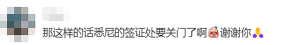
中国留学生返澳登机时突然被拒！
千万别再干这件事了…
虽说中方对澳免签入境15天，让广大华人能够更加方便回国探亲办事，但中国人想要入境澳洲，在签证方面的要求还是十分严格！
这不最近，就有人从中国飞澳洲，结果还没登机，就突然被告知，
签证已被澳洲方面拉黑…
（截图来源小红书@xueyan）
近日，一位博主就表示，随着假期结束，自己和女儿以及女儿的同学三人打算从厦门机场直飞悉尼，但在值机的时候发现，
自己和女儿的机票一路顺利通行，
但同行女孩的机票验不了！
等了二十来分钟，机组工作人员才回复说，是悉尼方拒了，原因是她持旅游签留澳洲时间超过三个月！
按照规定，
她可能已经上了澳洲移民局的黑名单…
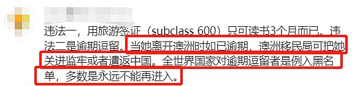
突然的变故不禁让三个人直接蒙了，于是这位妈妈将经历分享到社交平台，很快就有华人给出了解释：
“原来她是在用旅游签入境澳洲转的学生签证，其实她没有非法滞留在澳洲。
首先，她的旅游签是入境后3个月内有效，入境后她递交了学生签证，就会拿到一个过桥签A（非实质的签证），这个过桥签在旅游签过期后允许申请人继续合法留在澳洲直到学生签证结果下来。
她现在是放假回国玩了，但是她的旅游签已经过期，学生签的过桥A已经生效，所以她相当于已经没有实质的有效签证进入澳洲，她当时如果要短期离开澳洲的话要把A转成过桥签B，这样就可以在规定时间内回去澳洲。
现在她现在只能做的就是等学生签证的结果，如果下签了就可以随时入境澳洲，如果被拒了大概率可以做好退学的准备。”
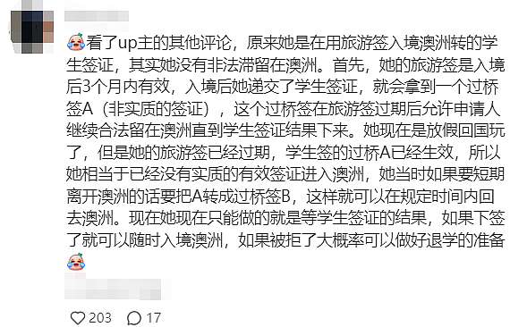
那么为什么明明是留学，却要申请旅游签呢？
这位博主回答说，女儿的同学确实是一名留学生，但因为留学签证还没有办下来，所以走的路子是先办理旅游签证，然后进入澳洲以后转成学生签证，之前在澳洲境内申请留学签成功率更高。
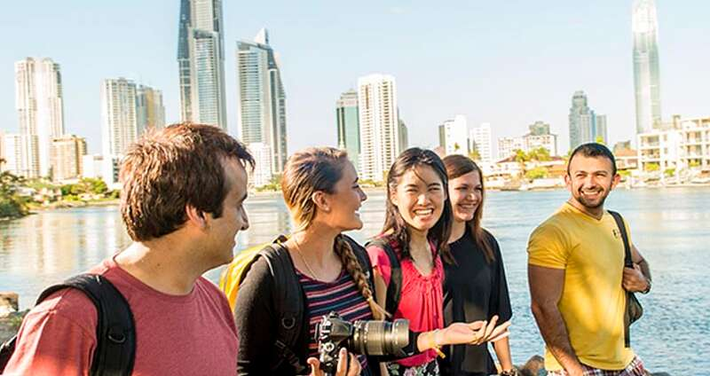
（示意图）不过，这个方法已经被移民局彻底堵死了：
因为从今年的7月1日开始，澳洲已经不再允许600签证即旅游签、和485签证即工签持有人在澳洲境内申请学生签证！
也就是说，持旅游签进入澳洲的人，和持工签的人，无法再在澳洲境内转学生签。
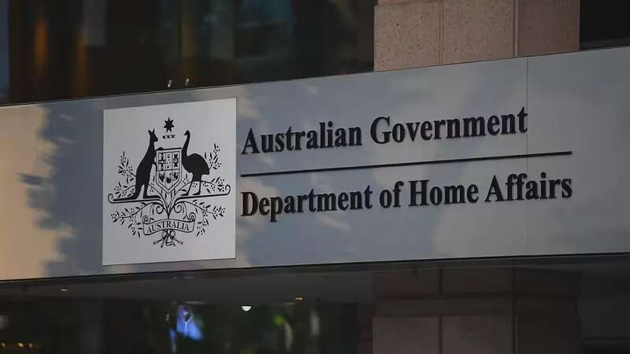
从博主的回答中也能看到，这名女生的学生签还没有完全办下来，就直接离开了澳洲，也没有告知办理的中介…
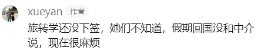
澳洲移民局按照旅游签计算的话，她属于在境内逗留超过了90天的最长期限…
看来，无论是回国之后延期，还是去澳洲留学，大家一定要提前了解并且严格遵守相关规定！
否则被列入黑名单，就不只是“花钱买教训”那么简单了…